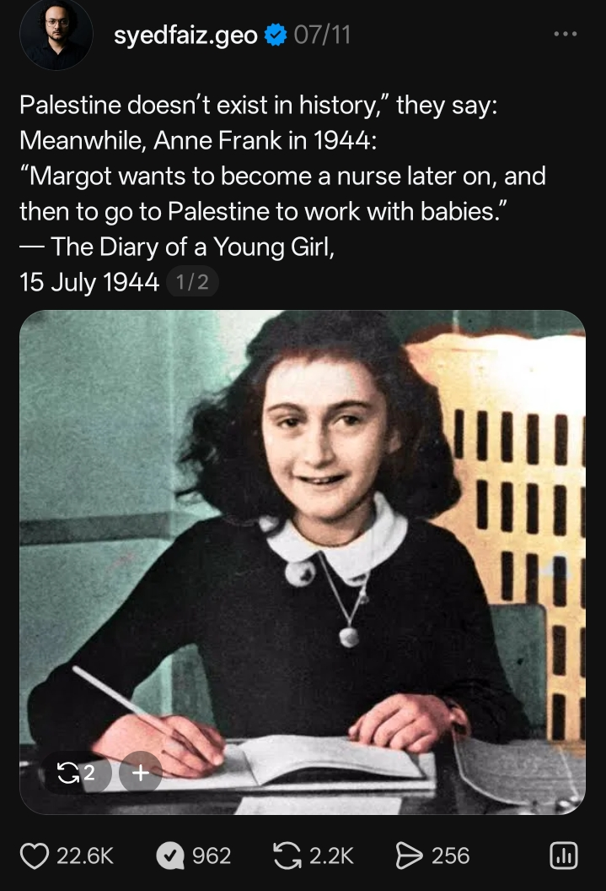

INDEPENDENT JOURNALISM
Behind the headlines.
Beyond the narrative.
I'm Syed Faiz Geo, an independent journalist, political commentator and author exploring geopolitics, international affairs and the stories shaping our world.

Syed Faiz Geo
Independent Journalist & Author
Geopolitical Commentary
